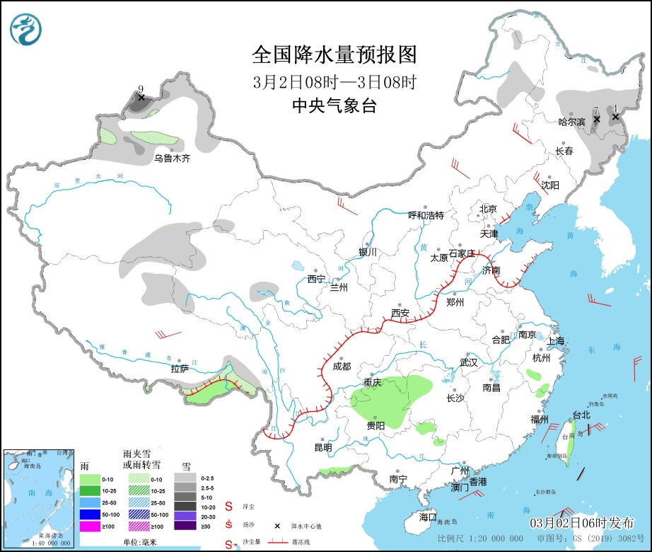
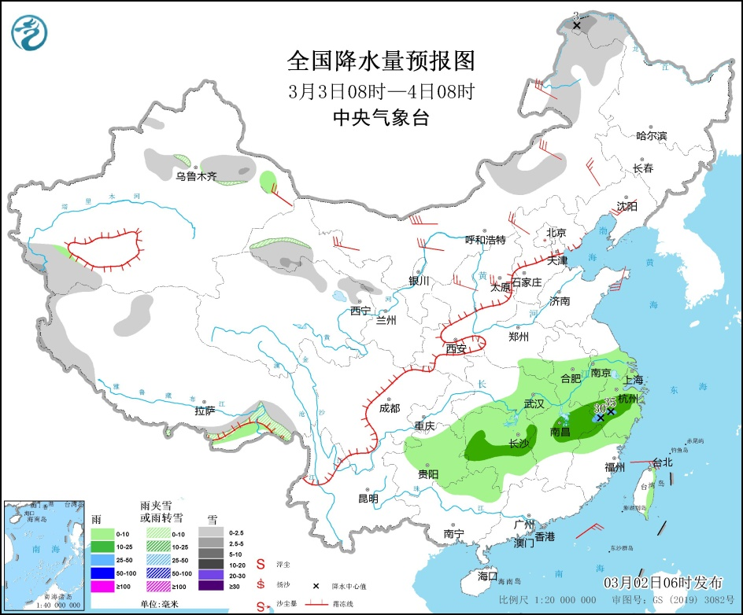
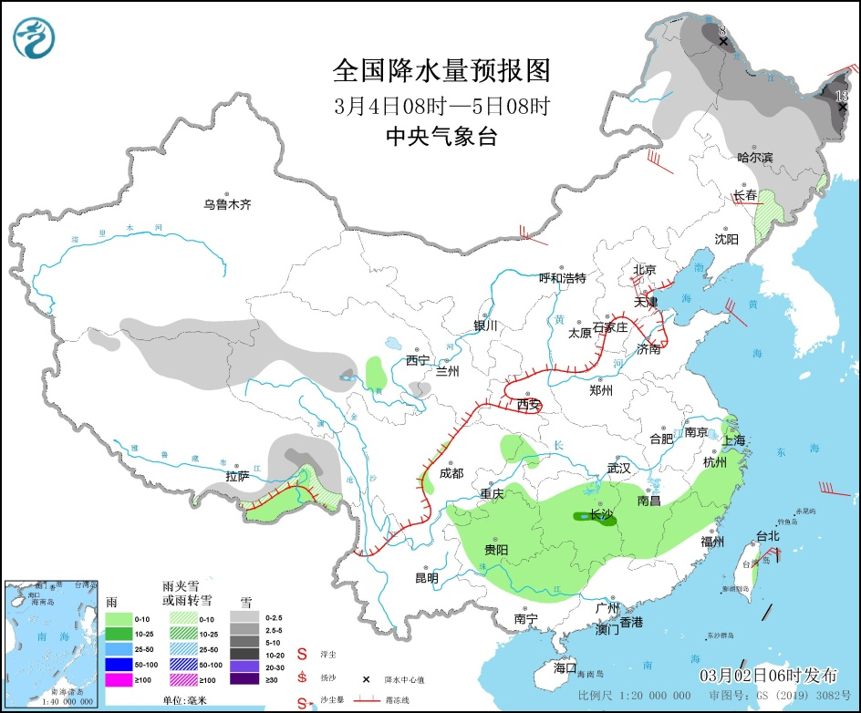

昨日，全国大部地区降水稀少；受冷空气影响，内蒙古中部、河北北部、北京中部、山西、辽东半岛、山东东部、江苏东部、浙江东部等地出现7～8级阵风，局地9～10级。今5时较昨5时，华北中南部、黄淮、江淮、江汉、江南中北部及广西东北部、辽宁东部、吉林东部等地出现4～8℃降温，河南中部、山东南部、安徽北部、吉林东南部等局地降温10～12℃。
3日-5日，北方地区有一次弱冷空气过程。受其影响，内蒙古、华北、黄淮、东北地区中南部等地将有4～6级、阵风7～9级大风，气温下降4～6℃，局地超过8℃；3日-4日，内蒙古中西部、甘肃西部、宁夏、陕西北部、山西北部等地的部分地区有扬沙或浮尘天气。
此外，3月2日20时-5日20时，受低层切变线影响，江淮西部、江南、西南地区东部等地多阴雨天气，以小雨为主，部分地区有中雨。
3月2日08时至3日08时，黑龙江东南部、吉林东部、新疆西北部等地部分地区有小到中雪或雨夹雪，其中，黑龙江东南部、新疆北疆北部等地部分地区有大雪（5～9毫米）。贵州北部、湖南西北部等地部分地区有小雨。内蒙古中北部、辽宁中部、西藏北部等地部分地区有4～6级风（见图1）。

图1 全国降水量预报图（3月2日08时-3日08时）
3月3日08时至4日08时，内蒙古东北部、黑龙江西北部、新疆沿天山地区等地部分地区有小到中雪（2.5～3毫米）。江淮大部、江汉东部、江南大部、西南地区东南部、广西东北部等地部分地区有小到中雨，其中，江西北部、浙江中部等地部分地区有大雨（25～35毫米）。内蒙古、辽宁、新疆东部、陕西北部、山西中部、河北北部、山东半岛等地部分地区有4～6级风，其中，内蒙古西北部部分地区有6～7级风（见图2）。

图2 全国降水量预报图（3月3日08时-4日08时）
3月4日08时至5日08时，内蒙古东北部、东北地区中北部、西藏东部、青海西部等地部分地区有小到中雪，其中，黑龙江东北部等地部分地区有大到暴雪（10～13毫米）。江南大部、贵州大部、广西中北部等地部分地区有小到中雨，其中，湖南中部等地部分地区有大雨。内蒙古中东部、东北地区中南部、河北北部等地部分地区有4～6级风，其中，内蒙古东部部分地区有6～7级风（见图3）。

图3 全国降水量预报图（3月4日08时-5日08时）
1.3月3-5日冷空气过程，关注大风降温及新疆甘肃内蒙古等地沙尘天气的不利影响。
制作： 徐成鹏 签发： 马学款